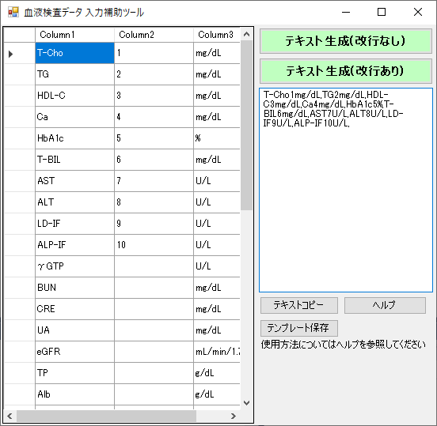

レポートや論文に掲載する検査データ（血液検査データなど）の入力作業を補助するツールです。血液検査データを表形式で入力すると、自動的に1行のテキストにしてくれます。

富士通の電子カルテHOPEシリーズの掲載順にほぼ準拠しています。順序や項目、単位はカスタマイズ可能です。
順序や項目、単位を変更したい場合は、master.csvを編集してください。
master.csvが読み込まれて、初期データとなります。
お気軽にこちらからお問い合わせください。